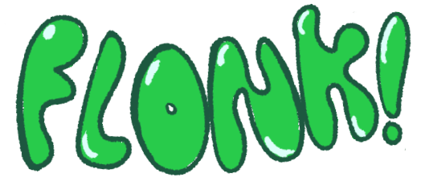

INSTALAR
La aventura de Flonk!
¡El chef François 🥐 ha secuestrado a la hermana de Flonk!
Explora un mundo lleno de peligros para rescatarla antes de que se convierta en un 👨🍳 plato de cocina francesa 🥘.
Flonk! es un videojuego desarrollado por KaosTeam, un grupo de estudiantes del Grado de Desarrollo de Videojuegos de la Universidad Complutense de Madrid (Curso 2023-24).